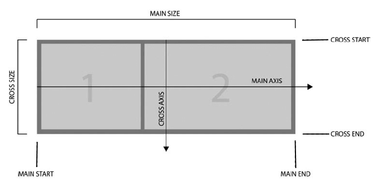

Стандартная модель box-sizing: content-box
Отличие margin от padding и влияние на размеры блока
Альтернативные модели
box-sizing: border-box
box-sizing: padding-box
padding-box только в FireFox работал, сейчас точных сведений о работе - нет
Все свойства для содержимого оставались прежними, изменялся только способ расчета
Поглощение отступов
Отступы margin-top и margin-bottom иногда объединяются в один,
с размером равным наибольшему из них (или размеру одного, если они равны).
Это поведение известно как схлопывание внешних отступов (margin collapsing).
Отступы плавающих и абсолютно позиционированных
элементов никогда не схлопываются.
Реальный отступ 10px
Реальный общий отступ 20px, снизу и сверху как от родительского элемента, так и от дочерних
Реальный отступ 0, cхлопнулся снизу с этим текстом
Реальный отступ 0, cхлопнулся снизу с этим текстом
Псевдоэлементы
Псевдоэлемент в CSS — это ключевое слово, добавляемое к селектору, которое позволяет стилизовать определённую часть выбранного элемента.
Нормальный поток
Это система, посредством которой элементы
размещаются внутри окна просмотра браузера.
Для блочных элементов, направление в котором будет добавляться новый элемент, сверху -> вниз, на следующей строке, в зависимости от вложенности элементов.
Для строчных элементов, направление в котором будет добавляться новый элемент, слева -> направо, в зависимости от ширины блока, в котором они находятся, при недостаточном месте будут смещаться на новую строку.
Для блочно-строчных элементов, направление в котором будет добавляться новый элемент, такое же как и у строчного, но поведение отступов - блочное
Блочные элементы
Строчные элементы
String StringСтрочно-блочные элементы
String StringОбтекание
float — элемент с установленным float (элемент <div> в данном случае)
изымается из нормального потока документа и крепится с левой стороны от родительского контейнера
(элемент .container в данном случае). Любой контент, который следует ниже за обтекаемым элементом в макете при нормальном
потоке теперь будет оборачивать его вокруг, заполняя пространство справа от него начиная на той же высоте что и вершина
обтекаемого элемента. Там он остановится.
Используя свойство
clear: both можно сделать границу контейнера, включающей в себя float блок, т.к. его действие будет отменяться этим css свойством
Абсолютное позиционирование
Визуально переносит элемент на новое место. Новое место вычисляется по координатам left/top/right/bottom относительно ближайшего позиционированного родителя. Если такого родителя нет, то им считается окно. Ширина элемента по умолчанию устанавливается по содержимому. Можно указать противоположные границы left/right (top/bottom). Элемент растянется. Окружающие элементы заполняют освободившееся место
Содержащий блок
Положение и размер блока(ов) элемента иногда вычисляются относительно некоторого прямоугольника, называемого содержащим блоком элемента (containing block). Содержащий блок — это блок, который содержит другой элемент. В случае нормального потока корневой элемент html является содержащим блоком для элемента body, который, в свою очередь, является содержащим блоком для всех его дочерних элементов и так далее. В случае позиционирования содержащий блок полностью зависит от типа позиционирования. Содержащий блок элемента определяется следующим образом:
Media
At-правило @media в CSS связывает набор операторов, ограниченных фигурными скобками, в CSS блок, применяется при соблюдении условия одного или нескольких медиавыражений.
Медиавыражения используются в тех случаях , когда нужно применить разные CSS-стили, для разных устройств по типу отображения (например: для принтера, монитора или смартфона), а также конкретных характеристик устройства (например: ширины окна просмотра браузера), или внешней среды (например: внешнее освещение). Учитывая огромное количество подключаемых к интернету устройств, медиавыражения являются очень важным инструментом при создании веб-сайтов и приложений, которые будут правильно работать на всех доступных устройствах, которые есть у ваших пользователей.
Свойства для media:
Тип носителя
Свойства для media:
Характеристики носителя
С приставками min/max
Пример записи из кода:
@media screen and (min-width: 320px) {
.flex-block {
min-width: 300px;
}
}
@media screen and (min-width: 900px) {
.flex-block {
width: 800px;
}
}
@media screen and (min-width: 1200px) {
.flex-block {
width: 1000px;
}
}
initial-scale
Управляет уровнем масштабирования при первой загрузке страницы.
Минимум: 0.1. Максимум: 10. По умолчанию: 1.
Отрицательные значения: игнорируются.
minimum- на сколько можно уменьшать масштаб страницы
maximum- на сколько можно увеличивать масштаб страницы
Соотношение пикселей по умолчанию зависит от плотности отображения. Для дисплея с плотностью менее 200 точек на дюйм это соотношение равно 1,0. Для дисплеев с плотностью от 200 до 300 точек на дюйм это соотношение равно 1,5. Для дисплеев с плотностью более 300 точек на дюйм это соотношение равно целому число (density/150dpi)
На данной странице initial-scale=1
Flex
Благодаря Flexbox проще создавать сложные, комплексные интерфейсы, где мы с легкостью можем переопределять направление и выравнивание элементов, создавать адаптивные табличные представления. Кроме того, Flexbox довольно прост в использовании. Единственная проблема, которая может возникнуть при его применении, - это кроссбраузерность. Например, в Internet Explorer поддержка Flexbox и то частичная появилась только в последней версии - IE11. В то же время все современные браузеры, в том числе Microsoft Edge, Opera, Google Chrome, Safari, Firefox, имеют полную поддержку данного модуля.
Основные понятия

Одно из ключевых понятий представляет main axis или центральная ось.
Это условная ось во flex-контейнере, вдоль которой позиционируются flex-элементы.
Main axis и cross axiss в flexbox и css 3
Элементы в контейнере могут располагаться по горизонтали в виде строки
и по вертикали в виде столбца. В зависимости от типа расположения будет
меняться и центральная ось. Если расположение в виде строки, то центральная
ось направлена горизонтально слева направо. Если расположение в виде столбца,
то центральная ось направлена вертикально сверху вниз.
Термины main start и main end описывают соответственно начало и конец
центральной оси, а расстояние между между ними обозначается как main size.
Кроме основной оси существует также поперечная ось или cross axis. Она
перпендикулярна основной. При расположении элементов в виде строки cross
axis направлена сверху вниз, а при расположении в виде столбца она направлена
слева направо. Начало поперечной оси обозначается как cross start, а ее конец
- как cross end. Расстояние между ними описывается термином cross size.
Пример flex-direction (Направление в контейнере):
Row
Column
Row-reverse
Column-reverse
Пример flex-wrap (Перенос содержимого на новую строку или столбец):
Row
Column